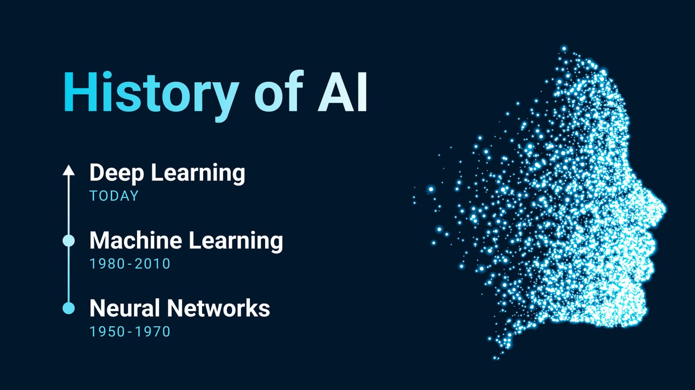

History of AI
The history of Artificial Intelligence (AI) spans several decades, marked by significant milestones, breakthroughs, and periods of both optimism and skepticism. The field of AI has evolved from theoretical concepts and early experiments to practical applications that impact various aspects of our lives today. Understanding the history of AI helps us appreciate its current capabilities and potential future developments.
Q1: What is the origin of the concept of AI?
Q2: What were the key milestones in the development of AI in the early years?
Q3: What is the significance of the "AI Winter"?
Q4: What were the major breakthroughs in AI during the late 20th century?
Q5: How did AI progress in the early 21st century?
Q6: What are some recent developments in AI?
Q7: What is the current state of AI research and applications?
Q8: What are the future prospects and challenges for AI?